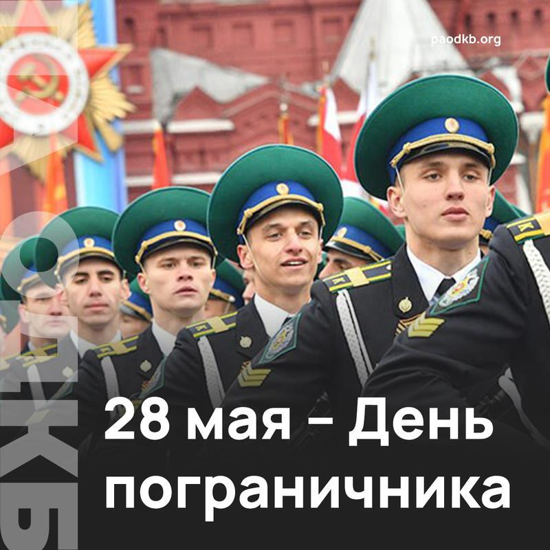

28 мая — День пограничника Республики Беларусь
Декретом Совнаркома от 28 мая 1918 года была учреждена пограничная охрана РСФСР. Немногим ранее — 30 марта 1918 года, было создано Главное управление пограничной охраны. 1 февраля 1919 года, в соответствии с распоряжением Реввоенсовета Республики (РВСР), пограничная охрана была преобразована в пограничные войска РСФСР. С 24 ноября 1920 года вновь была образована пограничная охрана в составе Особого отдела ВЧК при СНК РСФСР. 27 сентября 1922 года был сформирован Отдельный пограничный корпус (ОПК) в составе войск ГПУ НКВД РСФСР (после 15 ноября 1923 года — войск ОГПУ при СНК СССР). С июля 1934 года руководство пограничными войсковыми формированиями осуществляло Главное управление пограничной и внутренней охраны НКВД СССР. Начиная с 1937 года вновь стал применяться термин «пограничные войска». Руководство пограничными войсками стало осуществлять Главное управление пограничных и внутренних войск НКВД СССР. 28 марта 1957 года пограничные войска вошли в состав Комитета государственной безопасности при Совете министров СССР (КГБ СМ СССР). Было создано Главное управление пограничных войск КГБ СССР. 5 июля 1978 года КГБ СМ СССР преобразован в самостоятельный государственный комитет — Комитет государственной безопасности СССР (КГБ СССР). В Республике Беларусь этот праздник был установлен в 1995 году указом Президента, чтобы отметить исторические заслуги защитников государственных рубежей.
28 мая в Республике Беларусь отмечается День пограничника. Пограничные войска выполняют почетную обязанность, охраняя внешние рубежи Республики Беларусь. День пограничника – всенародный праздник мужества и патриотизма, надежности и защиты. Пограничники — славные воины и хранители покоя нашего государства!
Наши пограничники решают вопросы борьбы с терроризмом, нелегальной миграцией, контрабандой оружия и товаров. Задачи сложные, но наши пограничники успешно с ними справляются. Доблесть, верность воинскому долгу, отвага и мужество пограничников во все времена были и остаются залогом того, что границы нашей Родины под надежной защитой.
После обретения независимости Республика Беларусь сохранила эту дату праздника в память о героизме пограничников, как в годы Великой отечественной войны, так и их самоотверженные действия по охране внешних рубежей Беларуси в мирные дни.
Во все времена защита границ Отечества была одной из самых ответственных, трудных и почетных задач, выполнять которую государство доверяло только лучшим своим воинам. Честь и достоинство, несгибаемая воля и беззаветная преданность долгу, готовность к самопожертвованию являются отличительными чертами многих поколений пограничников. Нынешнее поколение стражей белорусской границы сохраняет и приумножает славные боевые традиции старших поколений.
